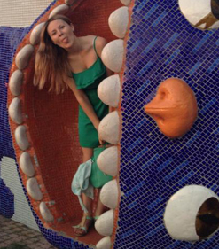

Коротко:
Я з маленького міста Волочиськ (ХМ область). Маю високий зріст і темне волосся. Вільно розмовляю англійською (ну і російською теж). Люблю вчитись, але тільки хорошого і цікавого. Малюю інколи, люблю готувати і кімнатні рослини. Дуже нескупа на слова і дуже хороша. І всі мене люблять. А ще мене немає в вк, я не дивлюсь телевізор, не палю і не вірю в всяке нефізичне (я атеїст).
Довго:
А-ля "автобіографічне оповідання"
Мій день народження припав на 31 березня 1994 в місті Волочиськ, Хмельницької області і я люблю казати, що я з Західної України, на що багато хто заперечує. Кілька років дуже малечого дитинства провела з батьками в Росії — Москві, під Москвою, біля кльових лісів і природи, що залишили по собі купу гарних спогадів. Мама моя — Ліля Кузьмінова, батько — Андрій Атаманчук: вона пропрацювала купу років вчителькою молодших класів, хоча в мене не викладала, а тата я завжди називала «електриком» — мабуть велика частина тяги до технічної спеціальності від нього — він дуже начитаний, розповідав багато цікавого про різні речі і саме з ним я розбирала на запчастини всякі штуки. Є в нас в сім’ї звичка — я маму-папу-бабусю називаю на ім’я, багатьох це дивує, але в нас так повелося з самого початку, тому здається нормальним. Ліля переїхала до Києва десь 2008му чи -9му, на той час там вже жили та працювали її брат та сестра. Згодом і Андрій теж подався до столиці. Я залишалась вдома, до закінчення 9го класу, потім, вигравши конкурс FLEX Program, поїхала до США навчатись, а повернувшись за 10 місяців залишилась жити з мама-папою. Батьки розлучились коли мені вже виповнився десяток.
Близькі мені люди певно дуже мене люблять бо кажуть, що в мене купа талантів — я тішусь, бо мені дійсно подобається співати, малювати, намагатися щось писати і ще щось, мабуть, що зараз не приходить в голову. Жоден з цих «талантів» в мене не виходить «професійно», хіба колись закінчила художку, але малювальник з мене не найкращий, як і з все інше. Але улюблених митців маю : Рене Маґрітт і, звісно, Ешер. Музику слухаю всяку-різну, футболом не захоплююсь, трохи граю в баскетбол, читати подобається про математику, наукову фантастику, психологію і геніальних дітей (хоча, можливо це не весь список — книжок ж ціла купа). Фарбувалась в блондинку кілька років, а до цього кольору було кілька інших спроб з іншої гамми (там і фіолетовий і дуже-невдалий-ціпляче-жовтий і рудий якийсь...), втім натуральний мій колір — молочний шоколад:) (до речі чорний шоколад я не люблю зовсім, і не зважаючи на всю його корисність, він мені не подобається). Люблю квіти — маю на підвіконні кілька гарнюнь, тішусь ними щодня. А як матиму дітей, то першого хлопчика назву Рене, а дівчинку — Міра.
Мій мережевий нікнейм niralittle, теж має за собою довгу-коротку історію, але її тут розповідати не буду. Мушу додати, що маю купку мінусів, але в порівнянні з моєю «кльовістю» вони нівелюються ;)
Все, мене звати Катя, 176 сантиметрів зросту, очі сіро-зелені — приємно познайомитись.